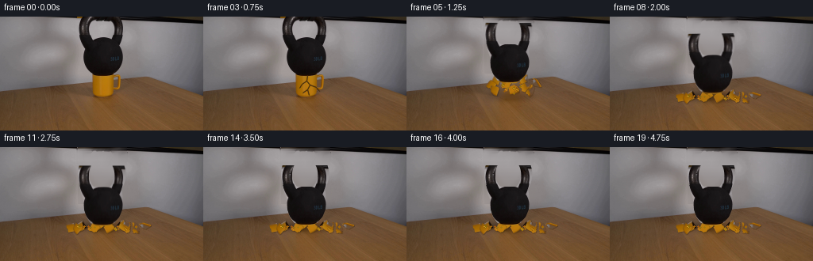

CODING AGENTS AS PIXEL WORLD MODELS
traex/GPT-5.6-Sol · 0187
点击播放 · 原生 RGB 像素
逐轮保存的候选
回放视频、检查图与代码变化。
每份候选均可单独播放。实际图片检查记录在下方工具轨迹中。
候选 01播放与检查图
点击播放 · 原生 RGB 像素

展开代码变化
--- 上一保存版本
+++ 本次保存版本
@@ -0,0 +1,242 @@
+from pathlib import Path
+
+import cv2
+import numpy as np
+from PIL import Image
+
+import artifact_io
+
+
+HERE = Path(__file__).resolve().parent
+H, W = 144, 256
+
+
+def aa_mask(draw_fn, scale=4):
+ """Draw a soft one-channel mask with inexpensive supersampling."""
+ m = np.zeros((H * scale, W * scale), np.uint8)
+ draw_fn(m, scale)
+ return cv2.resize(m, (W, H), interpolation=cv2.INTER_AREA).astype(np.float32) / 255.0
+
+
+def poly(mask, points, value=255, scale=1):
+ p = np.round(np.asarray(points, np.float32) * scale).astype(np.int32)
+ cv2.fillPoly(mask, [p], value)
+
+
+def composite(dst, rgb, alpha):
+ a = np.clip(alpha[..., None], 0.0, 1.0)
+ return dst * (1.0 - a) + rgb * a
+
+
+def translated_rgba(rgb, alpha, dx, dy, angle=0.0, center=(128, 42)):
+ M = cv2.getRotationMatrix2D(center, angle, 1.0)
+ M[:, 2] += (dx, dy)
+ wrgb = cv2.warpAffine(
+ rgb, M, (W, H), flags=cv2.INTER_LINEAR,
+ borderMode=cv2.BORDER_CONSTANT, borderValue=(0, 0, 0)
+ )
+ wa = cv2.warpAffine(
+ alpha, M, (W, H), flags=cv2.INTER_LINEAR,
+ borderMode=cv2.BORDER_CONSTANT, borderValue=0
+ )
+ return wrgb, wa
+
+
+def build_kettlebell(source):
+ # The bell is clipped by the upper edge in the supplied photograph. The
+ # outer/inner ellipses model the same thick cast-iron handle, including the
+ # small amount that comes into view when the bell drops.
+ def draw(m, s):
+ cv2.ellipse(m, (128 * s, 11 * s), (30 * s, 33 * s), 0, 0, 360, 255, -1)
+ cv2.ellipse(m, (128 * s, 11 * s), (16 * s, 20 * s), 0, 0, 360, 0, -1)
+ poly(m, [(100, 25), (112, 24), (119, 27), (139, 27), (148, 26),
+ (153, 31), (155, 43), (154, 55), (150, 65), (144, 72),
+ (138, 76), (121, 76), (114, 72), (109, 65), (106, 56),
+ (105, 43), (102, 34)], 255, s)
+
+ alpha = aa_mask(draw)
+ rgb = source.astype(np.float32).copy()
+
+ # Continue the photographed iron texture into the initially off-screen
+ # crown. This area is invisible in frame zero and only appears after the
+ # drop. The gradient agrees with the warm black iron in adjacent pixels.
+ yy, xx = np.mgrid[0:H, 0:W]
+ rng = np.random.default_rng(187)
+ grain = cv2.GaussianBlur(rng.normal(0, 1.4, (H, W)).astype(np.float32), (0, 0), .55)
+ synthetic = np.zeros_like(rgb)
+ light = np.clip(25.0 + 0.13 * (xx - 100) + 0.08 * yy + grain, 13, 39)
+ synthetic[..., 0] = light + 2
+ synthetic[..., 1] = light
+ synthetic[..., 2] = light + 0.5
+ # Blend only the top few rows, avoiding a visible horizontal source edge.
+ blend = np.clip((5.0 - yy) / 7.0, 0.0, 1.0)[..., None]
+ rgb = rgb * (1 - blend) + synthetic * blend
+ return rgb, alpha
+
+
+def mug_mask():
+ def draw(m, s):
+ # Straight ceramic body, rounded foot and narrow upper lip.
+ poly(m, [(116, 72), (142, 72), (149, 75), (151, 79), (150, 94),
+ (144, 99), (137, 101), (123, 101), (118, 98), (116, 92)], 255, s)
+ return aa_mask(draw)
+
+
+def make_clean_plate(source, kmask, mmask):
+ # Inpaint a slightly expanded silhouette so no stationary remnant is left
+ # behind moving objects. TELEA extends the real wall/table texture and its
+ # lighting rather than introducing a newly rendered background.
+ remove = np.maximum(kmask, mmask)
+ remove = cv2.dilate((remove * 255).astype(np.uint8), np.ones((5, 5), np.uint8), iterations=1)
+ plate = cv2.inpaint(source, remove, 7, cv2.INPAINT_TELEA).astype(np.float32)
+
+ # The broad iron body leaves inpainting little horizontal evidence. A
+ # low-frequency interpolation between both real sides restores the wall's
+ # gentle left-to-right falloff, while retaining the inpainted fine texture.
+ for y in range(0, 72):
+ x0, x1 = 98, 160
+ left = source[y, 91:98].mean(axis=0).astype(np.float32)
+ right = source[y, 160:167].mean(axis=0).astype(np.float32)
+ for x in range(x0, x1):
+ q = (x - x0) / (x1 - x0 - 1)
+ target = left * (1 - q) + right * q
+ # Inpainted variation remains visible but cannot form a dark ghost.
+ plate[y, x] = .72 * target + .28 * plate[y, x]
+ return plate
+
+
+def split_mug(source, mask):
+ # Voronoi cells produce irregular interlocking ceramic pieces while, at
+ # zero displacement, reconstructing the photographed mug without seams.
+ seeds = np.array([
+ (120, 76), (130, 76), (141, 77), (148, 80),
+ (120, 85), (130, 85), (141, 87),
+ (121, 95), (132, 96), (144, 95)
+ ], np.float32)
+ yy, xx = np.mgrid[0:H, 0:W]
+ d = (xx[..., None] - seeds[:, 0]) ** 2 + (yy[..., None] - seeds[:, 1]) ** 2
+ labels = d.argmin(axis=2)
+ pieces = []
+ for i, center in enumerate(seeds):
+ a = mask * (labels == i).astype(np.float32)
+ # A very small erosion-like bevel creates dark fracture edges once the
+ # cells separate, but keeps the initial reconstruction nearly exact.
+ pieces.append((source.astype(np.float32), a, tuple(center)))
+ return pieces
+
+
+def add_shadow(frame, strength, cx=130, cy=100):
+ m = np.zeros((H, W), np.float32)
+ cv2.ellipse(m, (cx, cy), (31, 5), 0, 0, 360, 1.0, -1)
+ m = cv2.GaussianBlur(m, (0, 0), 3.0)
+ a = np.clip(m * strength, 0, .5)[..., None]
+ # Warm reflected shadow on the wooden plane.
+ tint = np.empty_like(frame)
+ tint[:] = (34, 25, 20)
+ return frame * (1 - a) + tint * a
+
+
+def draw_stress_cracks(frame):
+ out = frame.copy()
+ # Fine branching cracks are restricted to the yellow ceramic surface.
+ lines = [
+ [(131, 74), (130, 81), (134, 86), (131, 92), (133, 99)],
+ [(130, 81), (124, 85), (121, 90)],
+ [(134, 86), (142, 89), (146, 94)],
+ [(131, 92), (125, 96)]
+ ]
+ for pts in lines:
+ cv2.polylines(out, [np.asarray(pts, np.int32)], False, (72, 46, 13), 1, cv2.LINE_AA)
+ return out
+
+
+def add_chips(frame, progress):
+ if progress <= 0:
+ return frame
+ out = frame.copy()
+ rng = np.random.default_rng(2026)
+ # Tiny chips follow short ballistic arcs and settle on the tabletop.
+ for i in range(18):
+ side = -1 if i % 2 == 0 else 1
+ speed = rng.uniform(12, 42)
+ x = 131 + side * speed * min(progress, 1.0)
+ launch_y = rng.uniform(79, 97)
+ final_y = rng.uniform(99, 104)
+ y = launch_y * (1 - min(progress, 1)) + final_y * min(progress, 1) - rng.uniform(1, 7) * np.sin(np.pi * min(progress, 1))
+ r = 1 if i < 14 else 2
+ col = (int(rng.uniform(132, 181)), int(rng.uniform(82, 123)), int(rng.uniform(5, 22)))
+ cv2.circle(out, (int(round(x)), int(round(y))), r, col, -1, cv2.LINE_AA)
+ if r == 2:
+ cv2.line(out, (int(x) - 1, int(y)), (int(x) + 1, int(y) + 1), (205, 147, 38), 1, cv2.LINE_AA)
+ return out
+
+
+def main():
+ source_u8 = np.asarray(Image.open(HERE / "first_frame.png").convert("RGB"), dtype=np.uint8)
+ if source_u8.shape != (H, W, 3):
+ raise ValueError(f"unexpected first frame shape {source_u8.shape}")
+ source = source_u8.astype(np.float32)
+
+ krgb, kmask = build_kettlebell(source_u8)
+ mmask = mug_mask()
+ plate = make_clean_plate(source_u8, kmask, mmask)
+ pieces = split_mug(source_u8, mmask)
+
+ # Final piece translations/rotations. Upper pieces travel farther down;
+ # side pieces are kicked outward by the descending bell.
+ destinations = [
+ (-18, 23, -58), (-7, 23, 35), (13, 21, 49), (33, 18, 76),
+ (-31, 16, -79), (-12, 16, -30), (18, 14, 65),
+ (-25, 7, -42), (5, 6, 28), (27, 7, 73)
+ ]
+ # Frames 0-2 hold the scientifically arranged setup. Frame 3 reveals a
+ # stress crack; the brittle failure then completes in roughly one second.
+ drop = [0, 0, 0, 0, 2, 8, 17, 25, 21.5, 24, 23, 23.5, 23, 23, 23, 23, 23, 23, 23, 23]
+ angles = [0, 0, 0, 0, 0, -.35, -.75, -1.05, .65, -.32, .18, -.08, 0, 0, 0, 0, 0, 0, 0, 0]
+ fracture = [0, 0, 0, 0, .08, .30, .60, .88, 1, 1, 1, 1, 1, 1, 1, 1, 1, 1, 1, 1]
+
+ frames = []
+ for index in range(20):
+ if index <= 2:
+ frame = source.copy()
+ elif index == 3:
+ frame = draw_stress_cracks(source_u8).astype(np.float32)
+ else:
+ p = fracture[index]
+ frame = plate.copy()
+ frame = add_shadow(frame, .18 + .30 * p, 130, 101)
+
+ # Ceramic fragments are behind the falling cast iron. Their paths
+ # include a small upward arc before they settle flat on the table.
+ for j, (prgb, pa, center) in enumerate(pieces):
+ fdx, fdy, fang = destinations[j]
+ eased = np.sin(min(p, 1.0) * np.pi / 2)
+ dx = fdx * eased
+ dy = fdy * p - (4.0 + (j % 3) * 1.4) * np.sin(np.pi * p)
+ ang = fang * eased
+ wrgb, wa = translated_rgba(prgb, pa, dx, dy, ang, center)
+ # Dark, hairline broken edges make the thickness legible.
+ edge = np.maximum(0, cv2.dilate(wa, np.ones((2, 2), np.uint8)) - wa)
+ dark = np.zeros_like(frame); dark[:] = (63, 40, 10)
+ frame = composite(frame, dark, edge * .42)
+ frame = composite(frame, wrgb, wa)
+
+ frame = add_chips(frame, p)
+ brgb, ba = translated_rgba(krgb, kmask, 0, drop[index], angles[index], (130, 52))
+ frame = composite(frame, brgb, ba)
+
+ # Brief darker contact shadow immediately after impact.
+ if index in (7, 8, 9):
+ impact = {7: .16, 8: .11, 9: .06}[index]
+ frame = add_shadow(frame, impact, 130, 102)
+
+ frames.append(np.clip(np.rint(frame), 0, 255).astype(np.uint8))
+
+ frames = np.stack(frames, axis=0)
+ # Contract-critical: use the original bytes, not a reconstructed frame.
+ frames[0] = source_u8
+ artifact_io.save(frames, HERE)
+
+
+if __name__ == "__main__":
+ main()
候选 02播放与检查图
点击播放 · 原生 RGB 像素

展开代码变化
--- 上一保存版本
+++ 本次保存版本
@@ -47,15 +47,21 @@
# outer/inner ellipses model the same thick cast-iron handle, including the
# small amount that comes into view when the bell drops.
def draw(m, s):
- cv2.ellipse(m, (128 * s, 11 * s), (30 * s, 33 * s), 0, 0, 360, 255, -1)
- cv2.ellipse(m, (128 * s, 11 * s), (16 * s, 20 * s), 0, 0, 360, 0, -1)
- poly(m, [(100, 25), (112, 24), (119, 27), (139, 27), (148, 26),
- (153, 31), (155, 43), (154, 55), (150, 65), (144, 72),
- (138, 76), (121, 76), (114, 72), (109, 65), (106, 56),
- (105, 43), (102, 34)], 255, s)
+ # Store the complete object 24 pixels lower on this private layer. At
+ # compositing time it is shifted back up. This preserves the real
+ # visible pixels yet also retains the handle crown originally above the
+ # photograph, avoiding a flat crop edge as the weight falls.
+ o = 24
+ cv2.ellipse(m, (128 * s, (11 + o) * s), (30 * s, 33 * s), 0, 0, 360, 255, -1)
+ cv2.ellipse(m, (128 * s, (11 + o) * s), (16 * s, 20 * s), 0, 0, 360, 0, -1)
+ poly(m, [(100, 25+o), (112, 24+o), (119, 27+o), (139, 27+o), (148, 26+o),
+ (153, 31+o), (155, 43+o), (154, 55+o), (150, 64+o), (144, 70+o),
+ (138, 73+o), (121, 73+o), (114, 70+o), (109, 64+o), (106, 56+o),
+ (105, 43+o), (102, 34+o)], 255, s)
alpha = aa_mask(draw)
- rgb = source.astype(np.float32).copy()
+ rgb = np.zeros_like(source, dtype=np.float32)
+ rgb[24:] = source[:-24]
# Continue the photographed iron texture into the initially off-screen
# crown. This area is invisible in frame zero and only appears after the
@@ -68,16 +74,18 @@
synthetic[..., 0] = light + 2
synthetic[..., 1] = light
synthetic[..., 2] = light + 0.5
- # Blend only the top few rows, avoiding a visible horizontal source edge.
- blend = np.clip((5.0 - yy) / 7.0, 0.0, 1.0)[..., None]
- rgb = rgb * (1 - blend) + synthetic * blend
+ # Hidden crown meets the source's real top row continuously.
+ seam = source[0].astype(np.float32)[None, :, :]
+ hidden_mix = np.clip(yy / 23.0, 0.0, 1.0)[..., None]
+ hidden = synthetic * (1 - hidden_mix) + seam * hidden_mix
+ rgb[:24] = hidden[:24]
return rgb, alpha
def mug_mask():
def draw(m, s):
# Straight ceramic body, rounded foot and narrow upper lip.
- poly(m, [(116, 72), (142, 72), (149, 75), (151, 79), (150, 94),
+ poly(m, [(117, 74), (141, 74), (149, 76), (151, 79), (150, 94),
(144, 99), (137, 101), (123, 101), (118, 98), (116, 92)], 255, s)
return aa_mask(draw)
@@ -178,8 +186,11 @@
source = source_u8.astype(np.float32)
krgb, kmask = build_kettlebell(source_u8)
+ visible_kmask = cv2.warpAffine(kmask, np.float32([[1, 0, 0], [0, 1, -24]]),
+ (W, H), flags=cv2.INTER_LINEAR,
+ borderMode=cv2.BORDER_CONSTANT, borderValue=0)
mmask = mug_mask()
- plate = make_clean_plate(source_u8, kmask, mmask)
+ plate = make_clean_plate(source_u8, visible_kmask, mmask)
pieces = split_mug(source_u8, mmask)
# Final piece translations/rotations. Upper pieces travel farther down;
@@ -222,7 +233,7 @@
frame = composite(frame, wrgb, wa)
frame = add_chips(frame, p)
- brgb, ba = translated_rgba(krgb, kmask, 0, drop[index], angles[index], (130, 52))
+ brgb, ba = translated_rgba(krgb, kmask, 0, drop[index] - 24, angles[index], (130, 76))
frame = composite(frame, brgb, ba)
# Brief darker contact shadow immediately after impact.
候选 03播放与检查图
可观测工具轨迹
实际执行的命令与返回图片。
命令 1exit 0
/bin/bash -lc "cat GENERATION_RULES.md && printf '\\n--- PROMPT ---\\n' && cat prompt.txt"
命令 2exit 1
/bin/bash -lc "find . -maxdepth 2 -type f -printf '%p\\n' | sort && printf '\\n--- tools ---\\n' && command -v ffmpeg && command -v ffprobe && python3 - <<'PY'
from PIL import Image
im=Image.open('first_frame.png')
print(im.mode, im.size)
PY"命令 3exit 0
/bin/bash -lc 'cat artifact_io.py'
命令 4exit 0
/bin/bash -lc "python3 - <<'PY'
from PIL import Image
import numpy as np
im=np.array(Image.open('first_frame.png').convert('RGB'))
print('shape',im.shape,'dtype',im.dtype,'range',im.min(),im.max())
print('mean',im.mean((0,1)), 'std',im.std((0,1)))
# print sampled rows/cols average and quantized rough color map 8x4
for gy in range(12):
s=[]
for gx in range(32):
a=im[gy*12:(gy+1)*12,gx*8:(gx+1)*8].mean((0,1))
# categorize based HSV-ish
r,g,b=a
mx=max(a); mn=min(a)
if mx<45:c='K'
elif mx<85:c='d'
elif mx>210 and mx-mn<20:c='W'
elif mx-mn<15:c='g'
elif r>g*1.3 and r>b*1.3:c='R'
elif r>1.15*b and g>1.12*b:c='Y'
elif b>1.2*r and b>1.1*g:c='B'
elif r>1.15*g and r>1.15*b:c='O'
else:c='.'
s.append(c)
print(''.join(s))
# Most common exact colors
u,c=np.unique(im.reshape(-1,3),axis=0,return_counts=True)
for i in np.argsort(c)[-20:][::-1]: print(c[i],u[i])
PY"命令 5exit 0
/bin/bash -lc "python3 - <<'PY'
import numpy as np
from PIL import Image
im=np.array(Image.open('first_frame.png').convert('RGB')).astype(float)
# luminance + sobel-ish edge block maps
lum=im@np.array([.2126,.7152,.0722])
# print luminance quantized 64x36
chars=' .,:;irsXA253hMHGS#9B&@'
for mode in ['lum','edge','yellow','dark']:
print('\\n---',mode,'---')
if mode=='lum': a=lum
elif mode=='edge':
gy=np.zeros_like(lum);gx=np.zeros_like(lum); gy[1:-1]=lum[2:]-lum[:-2];gx[:,1:-1]=lum[:,2:]-lum[:,:-2];a=np.hypot(gx,gy)
elif mode=='yellow': a=np.maximum(0, np.minimum(im[:,:,0]-im[:,:,2], im[:,:,1]-im[:,:,2]))
else:a=255-lum
for by in range(0,144,4):
s=''
for bx in range(0,256,4):
v=a[by:by+4,bx:bx+4].mean()
if mode=='lum': idx=int(np.clip(v/190*(len(chars)-1),0,len(chars)-1))
elif mode=='edge':idx=int(np.clip(v/40*(len(chars)-1),0,len(chars)-1))
elif mode=='yellow':idx=int(np.clip(v/65*(len(chars)-1),0,len(chars)-1))
else:idx=int(np.clip((v-80)/150*(len(chars)-1),0,len(chars)-1))
s+=chars[idx]
print(s)
# row summaries
print('\\nrows mean RGB')
for y in range(0,144,6): print(y, im[y:y+6].mean((0,1)).round(1))
PY"命令 6exit 0
/bin/bash -lc "python3 - <<'PY'
from PIL import Image
import numpy as np
im=np.array(Image.open('first_frame.png').convert('RGB')).astype(float); L=im.mean(2)
# per row runs matching various criteria
criteria={
'dark45':L<45,
'dark65':L<65,
'yellow':(im[:,:,0]>im[:,:,2]+30)&(im[:,:,1]>im[:,:,2]+8),
'satyellow':(im[:,:,0]>im[:,:,2]*1.5)&(im[:,:,1]>im[:,:,2]*1.15),
'neutraldark':(L<90)&(np.max(im,2)-np.min(im,2)<20),
}
for name,m in criteria.items():
print('\\n',name)
for y in range(0,144,3):
z=m[y:y+3].mean(0)>.4
ids=np.flatnonzero(z)
runs=[]
if len(ids):
bd=np.r_[0,np.flatnonzero(np.diff(ids)>1)+1,len(ids)]
runs=[(int(ids[a]),int(ids[b-1])) for a,b in zip(bd[:-1],bd[1:]) if b-a>=2]
if runs: print(f'{y:3}-{y+2:3}',runs)
# Sample grid center x100-180/y0-110 every 5
print('\\nRGB samples object')
for y in range(0,110,5):
print(y,' '.join('%02x%02x%02x'%tuple(im[y,x].astype(int)) for x in range(100,181,5)))
PY"命令 7exit 0
/bin/bash -lc "python3 - <<'PY'
from PIL import Image
import numpy as np, colorsys
im=np.array(Image.open('first_frame.png').convert('RGB')).astype(float)
# classify at 2x2 blocks region
for by in range(64,112,2):
s=''
for bx in range(90,222,2):
r,g,b=im[by:by+2,bx:bx+2].mean((0,1)); mx=max(r,g,b);mn=min(r,g,b); L=(r+g+b)/3
if L<32: c='@'
elif L<55 and mx-mn<18:c='#'
elif L<75 and mx-mn<18:c='D'
elif mx-mn<14:c='g'
elif r-b>50 and g-b>15 and r>125:c='Y' # bright mug
elif r-b>35 and g-b>12:c='y'
elif r-b>20:c='w' # wood
elif b-r>15:c='b'
else:c='.'
s+=c
print(f'{by:3} {s}')
print(' '+''.join(str((90+2*i)//10%10) for i in range(66)))
PY"命令 8exit 0
/bin/bash -lc "python3 - <<'PY' mods=['cv2','scipy','skimage','imageio'] for m in mods: try: z=__import__(m); print(m,'yes',getattr(z,'__version__','')) except Exception as e: print(m,'no',e) PY"
命令 9exit 0
/bin/bash -lc "python3 - <<'PY'
from PIL import Image
import numpy as np
im=np.array(Image.open('first_frame.png').convert('RGB')).astype(float)
L=im.mean(2)
for y in range(0,105):
# candidates L<85 between 75,185 contiguous run includes x128 or nearest
m=L[y]<85
ids=np.flatnonzero(m)
runs=[]
if len(ids):
bd=np.r_[0,np.flatnonzero(np.diff(ids)>1)+1,len(ids)]
runs=[(int(ids[a]),int(ids[b-1])) for a,b in zip(bd[:-1],bd[1:]) if ids[b-1]>=75 and ids[a]<=185]
if y%2==0: print(f'{y:3}',runs)
PY"命令 10exit 0
/bin/bash -lc "python3 - <<'PY'
from PIL import Image
import numpy as np
im=np.array(Image.open('first_frame.png').convert('RGB'))
for y in range(0,40,2):
print('y',y)
for x in range(0,256,8):
a=im[y:y+2,x:x+8].mean((0,1)).astype(int)
print('%3d'%a.mean(),end=' ')
print()
PY"命令 11exit 0
/bin/bash -lc "python3 - <<'PY'
from PIL import Image
import numpy as np
im=np.array(Image.open('first_frame.png').convert('RGB'))
for y in range(70,103,2):
print('\\ny=',y)
for x in range(108,221,4):
a=im[y:y+2,x:x+4].mean((0,1)).astype(int)
print(f'{x}:{a[0]:02x}{a[1]:02x}{a[2]:02x}',end=' ')
print()
PY"命令 12exit 0
/bin/bash -lc "python3 generate.py && python3 - <<'PY'
import numpy as np
from PIL import Image
f=np.stack([np.array(Image.open(f'frames/{i:02}.png').convert('RGB')) for i in range(20)])
a=np.array(Image.open('first_frame.png').convert('RGB'))
print('shape/dtype/range:',f.shape,f.dtype,f.min(),f.max())
print('frame0 exact:',np.array_equal(f[0],a))
print('changed pixels:',[int(np.any(f[i]"'!=f[max(0,i-1)],2).sum()) for i in range(20)])
print('"'mean abs from first:',[round(float(np.abs(f[i].astype(float)-f[0]).mean()),2) for i in range(20)])
z=np.load('pixels.npz')['pixels'];print('npz',z.shape,z.dtype)
PY"命令 13exit 0
/bin/bash -lc "python3 generate.py && python3 - <<'PY'
import numpy as np
from PIL import Image
f=np.stack([np.array(Image.open('frames/%02d.png'%i).convert('RGB')) for i in range(20)])
a=np.array(Image.open('first_frame.png').convert('RGB'))
print('shape',f.shape,f.dtype,'frame0 exact',np.array_equal(f[0],a))
print('change counts',[int(np.any(f[i]"'!=f[i-1],2).sum()) for i in range(1,20)])
for i in [3,4,5,6,7,8,9,10,12,19]:
d=np.any(f[i]!=a,2); ys,xs=np.where(d)
print(i,(xs.min(),ys.min(),xs.max(),ys.max()),'"'count',len(xs),'mean',f[i].mean((0,1)).round(1))
PY"命令 14exit 0
/bin/bash -lc "python3 - <<'PY'
from PIL import Image
import numpy as np
for fi in [0,3,4,5,6,7,8,12]:
im=np.array(Image.open('frames/%02d.png'%fi).convert('RGB')).astype(float)
print('\\nFRAME',fi)
for by in range(0,124,4):
s=''
for bx in range(70,200,4):
a=im[by:by+4,bx:bx+4].mean((0,1));r,g,b=a;L=a.mean();mx=a.max();mn=a.min()
if L<30:c='@'
elif L<52 and mx-mn<20:c='#'
elif L<78 and mx-mn<20:c='D'
elif r-b>50 and g-b>15 and r>120:c='Y'
elif r-b>30 and g-b>8:c='y'
elif r-b>17:c='w'
elif mx-mn<14:c='.'
else:c='+'
s+=c
print(s)
PY"命令 15exit 0
/bin/bash -lc "python3 -m py_compile generate.py artifact_io.py && python3 - <<'PY'
from pathlib import Path
from PIL import Image
import numpy as np
p=np.load('pixels.npz')['pixels']
assert p.shape==(144,256,20) and p.dtype==np.uint32
src=np.asarray(Image.open('first_frame.png').convert('RGB'))
f0=np.asarray(Image.open('frames/00.png').convert('RGB'))
assert np.array_equal(src,f0)
assert len(list(Path('frames').glob('*.png')))==20
for i in range(20):
im=np.asarray(Image.open(f'frames/{i:02d}.png'))
assert im.shape==(144,256,3) and im.dtype==np.uint8
print('all contract checks passed')
print('artifacts:',[(x.name,x.stat().st_size) for x in [Path('pixels.npz'),Path('index.html'),Path('inspection.png'),Path('transition_check.png')]])
PY"命令 16exit 0
/bin/bash -lc 'git status --short 2>/dev/null || true'
保存候选 3 份；完成命令 16 次；可验证图片返回 0 张。原始 API 响应与完整日志保留在本地。